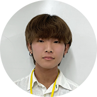

Webデザイン科の「いま」
今年度のWebデザイン科の
1年生はパワフルで積極的な学生が多く、
2年生は優しく落ち着きのある学生が多いです。
それぞれ様々な特徴を持った、
73名の学生たちが学んでいます。
大変なことも多いですが、日々高め合い、
助け合っています。この日専祭サイトも
2年生3名、1年生8名の総勢11名で制作しています。
そんな日専祭サイト制作メンバーに
「いま」をテーマに話を聞いてみました！！
Webデザイン科のイベント
学生の「いま」
日専祭制作メンバー1.2年合同座談会
今のWebデザイン科は何をしているの？
学んでいる学生たちは
どんなことに取り組んでいるの？
そこで、日専祭サイト制作メンバーに
「学生のいま」について語ってもらいました。

登壇者
野中 杏莉
髙橋 凜

西澤 侑陽

梅原 真之介
学生のいまを読む
作品紹介
サイトからアプリ、サービス設計までお手の物！
そんな学生たちの作品をご覧ください！
一年生前期はスポーツフェスティバルのサイト制作を、
二年生前期はU&Aでサービス提案を、
Webアプリケーションでアプリの制作を行いました。
2年生
1年生
カラオケパセラ動画鑑賞プランページUI提案
ターゲットによってサービスの価値が違うことに気づき、伝え方を変えるだけで既存のサービスの価値を高める提案
クライアント：株式会社ニュートン様
担当教諭 ：小山内
制作者： 高野・アンティポブ・佐々木・野中
作品を見る
良品計画
「MUJI passport ×記念日」サービス
「感じの良い暮らしと社会」良品計画の中期経営計画を実現するためのMUJIpassportアプリの活用
クライアント：株式会社良品計画様
担当教諭 ：小山内
制作者： 城子・大森・上瀬・師岡
作品を見る
ealette
ルーレットでランチを決めてくれるアプリ
Webアプリケーション II 課題制作
担当教諭 ：関根・川島
制作者： アンティポブ・野中・渡辺
作品を見る
第26回 スポーツフェスティバル
公式サイト
作品のこだわり
メインカラーを水色にしたり、空に見立てて目立たせたりとサイトから爽やかな夏を感じさせるようにしました。
1年前期課題制作
担当教諭 ：関根
制作者： 遠藤
作品を見る
第26回 スポーツフェスティバル
公式サイト

作品のこだわり
レイアウトは全体的に見やすさを意識し、キービジュアルではPC版で動画を画面いっぱいに流しインパクトと躍動感を演出した。
1年前期課題制作
担当教諭 ：関根
制作者： 神村
作品を見る
第26回 スポーツフェスティバル
公式サイト
作品のこだわり
企画がスポーツ全面！よりも、イベントを楽しむことに重点を置いていたので、スポーツらしさを出し過ぎない、ポップで明るい雰囲気を心掛けました。
1年前期課題制作
担当教諭 ：関根
制作者： 堤
作品を見る
第26回 スポーツフェスティバル
公式サイト
作品のこだわり
全体の色使いです。白をベースとしたシンプルなデザインにアクセントとしてピンク、青、緑を使って男女問わず見やすいデザインにしました。
1年前期課題制作
担当教諭 ：関根
制作者： 永井
作品を見る
第26回 スポーツフェスティバル
公式サイト
作品のこだわり
見ていて飽きないようにJSで動きを多く取り入れたことです。
1年前期課題制作
担当教諭 ：関根
制作者： 西澤
作品を見る
第26回 スポーツフェスティバル
公式サイト
作品のこだわり
このサイトを見た人にとてもスポフェスの雰囲気を伝えたかったので、動画や音声を入れたことです。また、新しい技術にも積極的に挑戦したことです。
1年前期課題制作
担当教諭 ：関根
制作者： 李
作品を見る
年度末に
進級・卒業制作展が
開催されます！
来場してくれるかな！？